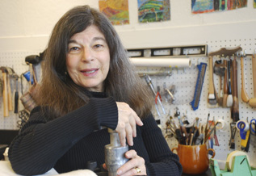

My art reflects my life and the life around me.
Landscape, myth and memory are sources.
Daily walks along the river keeps me close: touching and tasting, seeing and smelling ever-changing nature.
I walk in woods, mountains, and fields; by river and sea, seeking the living places on the earth --
sacred spaces where communication with nature transcends the mundane, satisfying the longings of the soul.
These works provide a doorway into a space closer to understanding of the mysteries.
Myths, ancient and modern stories, form narratives, real and imaginary.
They include magic mountains, sacred rivers, primeval forests and gardens of paradise.
Symbols, language that emerges from my subconscious, tapping my rich archive of experience, represent many cultures and times.
I carry a journal to make drawings and notes, as references and reminders of place.
Forms emerge as I work, and continue to develop through the process.
Studying with abstract expressionists Jimmy Ernst and Ad Reinhardt at Brooklyn College and then with Sidney Gross in the graduate program at the University of Maryland at College Park taught me to value the physical act of making art.
The free brushstrokes and approach to carving woodcuts that I use to build up my images function as a natural handwriting.
Memory serves to initiate the combination of these many elements that develop into my evocations of landscape.
My images are a synthesis of the spiritual experience, and inspiration that I find in the natural world.
The result is a conceptual and visual abstracted portrait of place.